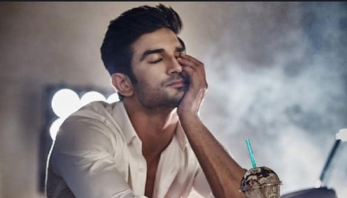

Sushant Singh Rajput
Sushant Singh Rajput was an accomplished actor, model, and dancer, who was born in Patna, Bihar, on January 21, 1986. He began his career in the entertainment industry with television shows such as "Pavitra Rishta" and later transitioned to Bollywood films. Some of his notable works include "Kai Po Che," "MS Dhoni: The Untold Story," "Raabta," "Kedarnath," "Sonchiriya," and "Chhichhore." He was also a trained dancer and had a passion for technology and astronomy.
- Born: 21th January 1986
- Died: 14th june 2020
- Occupation: actor
- Place of Birth: Bihar,India
- Place of Death: Mumbai, India.
Early Life
Sushant Singh Rajput was born in Patna in the state of Bihar to Krishna Kumar Singh and Usha Singh.[2][9][10] His father is a retired technical officer and worked at Bihar State Handloom Corporation in Patna.[11] He was the youngest of five siblings and had the nickname Gulshan.[12] One of his four sisters Mitu Singh was a state-level cricket player.[9] He attended the St. Karen's High School in Patna.[12][13] His family moved to Delhi following his mother's death in 2002 where Rajput completed his schooling for intermediate studies in Kulachi Hansraj Model School
Career
Rajput was reportedly an avid reader who was deeply interested in astrophysics and won the National Olympiad in Physics.[14] He secured admission in the Delhi College of Engineering (later renamed Delhi Technological University) to pursue a Bachelor of Engineering degree in mechanical engineering.[15][14] According to Rajput, he did not have any interest in engineering but his family gave him no option which left him dissatisfied. He instead wanted to become an astronaut and later an air force pilot but was also interested in Bollywood, being a fan of Shah Rukh Khan.
Career
Rajput began his career as a television actor and gained popularity with his role in the TV show Pavitra Rishta. He then transitioned to films and made his Bollywood debut in the movie Kai Po Che! in 2013. He went on to star in several successful films, including PK, MS Dhoni: The Untold Story, Raabta, Kedarnath, Sonchiriya, and Chhichhore. In addition to his acting career, Rajput was also a trained dancer and had attended dance classes under the choreographer Shiamak Davar. He was also a trained pilot and had a keen interest in astronomy and astrophysics. Rajput's death was a shock to the Indian film industry and his fans worldwide. He was found dead in his Mumbai apartment, and the cause of death was reported as suicide. However, his death has sparked a larger conversation about mental health, nepotism, and favoritism in the Indian film industry. Rajput's legacy continues to live on through his work and the impact he had on his fans. He was known for his talent, dedication, and passion for his craft, and he will always be remembered for his contributions to Indian cinema.